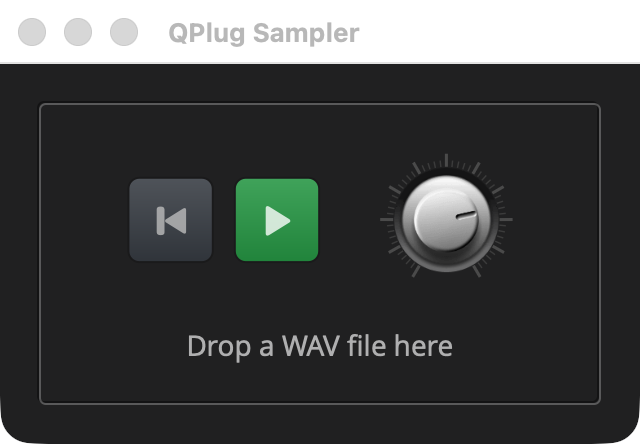

Sampler: Handing Data to the Audio Thread
Overview
example/q_plug/sampler plays a WAV file, a playback machine to play
along with. It is an audio effect like Gain: what comes in plays through,
with the sample on top. Drop a file on the editor and press Play, and it
plays once, to its end; the button turns to Pause, which holds the place,
and a second button rewinds to the start. A dial sets the sample’s volume,
over Gain’s range and with Gain’s taper.

|
Read Your First Plugin: Gain first. This page builds on it and explains only what the sampler adds. Where a part is the same as Gain’s, a callout points back to it instead. |
Gain’s processor needs one number from the rest of the plugin, and a parameter carries it. A sampler needs the sample itself: an array of audio, loaded from a file, that has to reach the audio thread whole, without the audio thread waiting for it and without the audio thread freeing the old one. A parameter cannot carry that. This page shows how Q’s handoff does, and adds three smaller things on the way:
-
Rewind, an action with no value for the host to keep, passed to the audio thread through a flag.
-
A
boolparameter on a button that toggles between two icons. -
Files dropped on the editor, read with Q’s wav_reader, from QIO, linked into a plugin.
The files are laid out as Gain’s are, with sampler in place of gain.
resources/ holds the one image the editor draws, the knob’s sprites.
When the sample ends, Play stays on, with nothing left to play. Turning it off is an edit, and edits reach the host from the main thread, so the processor, on the audio thread, cannot make one. Looper: Work for the Main Thread, the next page, adds a way for the processor to have that done, and a Loop switch with it.
|
The listings below are the parts of each file that matter. Each title
links to the whole file, and all of the example is in
|
Quick Start
As in Your First Plugin: Gain, with sampler in place of gain. On macOS and
Linux:
Q=/path/to/q
cp -R "$Q/example/q_plug/sampler" /tmp/sampler
cd /tmp/sampler
cmake -B build -G Ninja -DCMAKE_BUILD_TYPE=Debug -DQ_ROOT="$Q"
cmake --build buildOn Windows, in a command prompt with the MSVC environment loaded:
set Q=C:\path\to\q
xcopy /E /I "%Q%\example\q_plug\sampler" "%TEMP%\sampler"
cd /d "%TEMP%\sampler"
cmake -B build -G Ninja -DCMAKE_BUILD_TYPE=Debug -DQ_ROOT="%Q%"
cmake --build buildThen start the standalone app:
-
macOS:
open "build/products/QPlug Sampler.app" -
Linux:
"build/products/QPlug Sampler" -
Windows:
"build\products\Standalone-q_plug-sampler_standalone\QPlug Sampler.exe"
Drop a WAV file on the box in the editor, and press Play.
The Controller
The controller holds what both sides share. Gain’s held only its parameter; the sampler’s holds the sample as well.
#include <q_plug/controller.hpp>
#include <q/utility/handoff.hpp> (1)
...
// A sample, loaded whole: its frames interleaved, at the rate it was
// recorded at.
struct sample_buffer (2)
{
std::size_t length() const { return data.size() / channels; }
std::vector<float> data;
std::size_t channels = 1;
float sps = 0.0f;
};| 1 | Q’s handoff. |
| 2 | What the audio thread plays: every frame of the file, in memory. A
stereo file’s frames are interleaved, left then right, so length is
the number of frames, not of samples. |
class sampler_controller : public q_plug::controller
{
public:
using decibel = cycfi::q::decibel;
using path = std::filesystem::path;
enum { play_id, volume_id }; (1)
// The volume runs from silence, the 24 bit floor, up to +10 dB.
static constexpr decibel silence = cycfi::q::dB(-144.0); (2)
static constexpr decibel max_volume = cycfi::q::dB(10.0);
parameter_list parameters() const override;
bool playing() const;
decibel volume() const;
parameter const& volume_param() const;
// Main thread. False if the file is not a WAV file Q can read.
bool load(path const& file); (3)
std::string const& sample_name() const { return _sample_name; }
// Back to the start: set on the main thread, taken once on the audio
// thread.
void rewind(); (4)
bool take_rewind();
q::handoff<sample_buffer> sample; (5)
private:
std::string _sample_name;
std::atomic<bool> _rewind = false;
};| 1 | Two parameters: Play, and Volume. |
| 2 | Volume is Gain’s, with the same range, and volume and
volume_param are Gain’s accessors. |
| 3 | load reads a file into a sample_buffer and sends it through the
handoff. The presenter calls it when a file is dropped. |
| 4 | Rewind is an action, with no value for the host to save or automate,
so a flag carries it. rewind raises the flag and the processor takes it,
below. |
| 5 | The handoff. It is public, since the processor and the controller both reach it, and each calls only its own side: the controller sends, the processor receives. |
inline bool sampler_controller::playing() const
{
return get_parameter<bool>(play_id); (1)
}
...
inline void sampler_controller::rewind()
{
_rewind.store(true, std::memory_order_relaxed); (2)
}
inline bool sampler_controller::take_rewind()
{
return _rewind.exchange(false, std::memory_order_relaxed); (3)
}| 1 | A bool parameter reads back as a bool, as Gain’s volume reads
back as a q::decibel. |
| 2 | The main thread sets the flag. Nothing travels with it, so the ordering can be relaxed. |
| 3 | The audio thread clears the flag and gets whether it was set, in one atomic step, so a press is taken once however the two threads interleave. Presses that come between two blocks count as one. |
// Play is the transport, so a preset leaves it out.
parameter_list sampler_controller::parameters() const
{
static parameter params[] =
{
parameter{ 1, "Play", false }.dont_save(), (1) (2)
parameter{ 2, "Volume", 0_dB }.range(silence.rep, max_volume.rep) (3)
};
return { params };
}| 1 | An initial value of false makes Play a bool parameter, which the
host can automate like any other. |
| 2 | dont_save leaves it out of a preset, so loading one stops the
sample. The host’s session still keeps it. |
| 3 | Volume, as in Gain. |
bool sampler_controller::load(path const& file)
{
q::wav_reader wav{file.string()}; (1)
if (!wav || wav.num_channels() == 0)
return false;
auto s = std::make_unique<sample_buffer>(); (2)
s->data.resize(wav.length());
s->data.resize(wav.read(s->data)); (3)
s->channels = wav.num_channels();
s->sps = wav.sps();
sample.send(std::move(s)); (4)
_sample_name = file.filename().string();
return true;
}| 1 | Q’s wav_reader, from QIO, opens the file, and reads its samples
as float whatever format the file stores them in. |
| 2 | All of this runs on the main thread, where allocating, and reading a file, are allowed. |
| 3 | length is the file’s sample count, every channel’s samples
together. The buffer keeps what was read, in case the file holds fewer
samples than its header gives. |
| 4 | send sends the finished buffer to the audio thread. From the next
block on, receive returns it. The buffer it replaces stays alive until
the audio thread has started a block with the new one, and a later send
frees it, here, on the main thread. |
The Processor
class sampler_processor : public q_plug::processor
{
public:
sampler_processor(sampler_controller& ctl);
channel_config channels() const override { return {2, 2}; } (1)
void activate() override;
void reset() override;
void process(
in_channels const& in
, out_channels const& out) override;
private:
float gain() const; (2)
sampler_controller& _ctl;
sample_buffer const* _last = nullptr; // compared, never read (3)
double _pos = 0.0; // in the sample's frames (4)
q::one_pole_lowpass _gain_lp{1.0f};
};| 1 | Two inputs and two outputs: stereo in, stereo out, where Gain is mono. |
| 2 | gain, activate and the smoother are Gain’s. |
| 3 | The buffer the last block played. It is kept only to detect that a new one has arrived; it is never read through, because by the next block the main thread may have freed what it points to. |
| 4 | The play position, in frames of the sample. It is a double because
a sample recorded at another rate steps through fractions of a frame. |
void sampler_processor::activate()
{
_gain_lp.cutoff(4_Hz, float(sps()));
}
void sampler_processor::reset()
{
_gain_lp = gain();
_pos = 0.0; (1)
}| 1 | A reset, as on a transport jump, also goes back to the start of the sample. |
// The sample plays once, to its end, and pausing holds its place. A new
// sample, or a rewind, starts from the top. The sample is taken once per
// block and read only within it: the main thread frees an old one once a
// block has started with a newer one.
void sampler_processor::process(in_channels const& in
, out_channels const& out)
{
auto s = _ctl.sample.receive(); (1)
auto const rewind = _ctl.take_rewind(); (2)
if (s != _last || rewind)
{
_last = s;
_pos = 0.0;
}
// A sample recorded at another rate is stepped through at its own.
auto play = s && _pos < s->length() && _ctl.playing(); (3)
auto const step = play? s->sps / float(sps()) : 0.0f; (4)
auto const target = gain();
auto left = out[0];
auto right = out[1];
for (auto frame : out.frames)
{
auto l = 0.0f;
auto r = 0.0f;
if (play)
{
auto const i = std::size_t(_pos) * s->channels; (5)
l = s->data[i];
r = s->channels > 1? s->data[i + 1] : l;
_pos += step;
play = _pos < s->length(); (6)
}
// What comes in plays through, with the sample on top of it.
auto const in_l = in.size() > 0? in[0][frame] : 0.0f; (7)
auto const in_r = in.size() > 1? in[1][frame] : in_l;
auto const g = _gain_lp(target);
left[frame] = in_l + l * g;
right[frame] = in_r + r * g;
}
}| 1 | The current sample, taken once, at the top of the call, and used for
the whole of it. receive never waits, whatever the main thread is
doing. Before the first file is dropped it returns a null pointer. |
| 2 | Taken at the top as well, every call, so a press is never left waiting for a later block. |
| 3 | Paused, or at the end, the loop below writes the input alone, and
_pos stays where it was, so Play carries on from there. |
| 4 | A file recorded at 44.1 kHz, played at 48 kHz, moves 0.919 frames per output frame, so it plays at its own pitch and speed. Below, the position is truncated to a whole frame, plenty for an example. A sampler for real use interpolates between frames. |
| 5 | The frame’s first sample. A mono file plays on both sides; a file with more than two channels plays its first two. |
| 6 | At the end, the sample stops, and the rest of the block is the input alone. The position stays at the end until a rewind or a new sample. |
| 7 | The input plays through as it is: the dial sets only the sample’s volume. A host that gives the plugin a mono input gets it on both sides. |
Nothing here locks, allocates or frees. The sample is read through a pointer the audio thread took at the top of the call, and the main thread frees nothing the audio thread can still hold.
|
In depth: processor, for when |
The Presenter
void sampler_presenter::on_attach(elements::view& view_)
{
using ctl = sampler_controller;
// Play and Pause share one button, bound to the play parameter. Rewind
// goes straight to the controller: it holds no value for the host.
auto play = share(toggle_icon_button( (1)
icons::play, icons::pause, 1.5, play_color, pause_color));
bind(ctl::play_id, play, _ctl.parameters()[ctl::play_id]); (2)
auto rewind = share(icon_button(icons::to_start, 1.5, rewind_color)); (3)
rewind->on_click = [this](bool) { _ctl.rewind(); }; (4)| 1 | Elements' toggle_icon_button shows the first icon when off and the
second when on, at 1.5 times the icon font’s size. Given two colours,
each state has a body of its own: green while it shows Play, red while
it shows Pause. play_color, pause_color and rewind_color are rgba
constants at the top of the file. |
| 2 | The button is bound to Play with the parameter itself as the mapping,
which carries false and true to the button’s off and on. Clicking it
reaches the host as an edit, and automating Play from the host flips it. |
| 3 | A momentary button, with no state of its own. |
| 4 | A momentary button calls on_click once, when it is released over
the button. |
The volume is a dial this time, drawn from a sprite, with Gain’s taper:
auto constexpr knob_scale = 0.4f;
...
// A dial for the volume, drawn from Elements' white knob sprites, with
// Gain's console taper.
auto const& param = _ctl.volume_param();
auto knob = sprite{"knob_sprites_white_128x128.png", 128 * knob_scale (1)
, knob_scale};
auto volume = share(dial(radial_marks<15>(knob))); (2)
bind(ctl::volume_id, volume, db_scale{param.min(), param.max()}); (3)| 1 | A sprite is one image holding every frame of a control, stacked: here
100 frames of a white knob, each 128 pixels square, from Elements'
sprite_sliders_and_knobs example. The second argument is the height of
one frame as drawn, and the third the scale, so the knob is drawn 51
pixels across. The dial picks the frame for its position. The image ships
in resources/, and the build copies it beside the plugin, as Gain’s
thumb is. |
| 2 | Tick marks around the knob, inside Elements' dial, the control that
turns it. A dial’s travel is 0 to 1, as a fader’s is. |
| 3 | Bound through the same db_scale as Gain’s fader, so the dial gives
the range around unity most of its turn. |
// The drop box holds the controls, with the sample's name under them.
// A WAV file dropped on it is loaded, on the main thread, and its name
// shown.
auto const& name = _ctl.sample_name();
auto sample = share(label(name.empty()? no_sample : name)); (1)
auto controls = htile(
align_middle(margin_right(10, hold(rewind))),
align_middle(margin_right(30, hold(play))),
align_middle(hold(volume))
);
auto drop = share(drop_box( (2)
layer(
margin({20, 20, 20, 20},
vtile(
align_center(controls),
margin_top(15, align_center(hold(sample)))
)
),
frame{}
)
, {"text/uri-list"}));
drop->on_drop =
[this, &view_, sample = get(sample)](drop_info const& info) (3)
{
if (!contains_filepaths(info.data))
return false;
auto paths = get_filepaths(info.data);
if (paths.size() != 1 || !_ctl.load(paths[0])) (4)
return false;
if (auto l = sample.lock())
{
l->set_text(_ctl.sample_name()); (5)
view_.refresh(*l);
}
return true;
};| 1 | The label shows the loaded file’s name. The editor is rebuilt each time it opens, so the name is read from the controller, which keeps it while the editor is closed. |
| 2 | Elements' drop_box accepts files dragged onto it, as a list of
paths, the MIME type text/uri-list. It draws a highlight while a drag
is over it. It holds the whole panel: the buttons and the dial in a row,
and the name under them, inside a frame. A file can be dropped anywhere
on it, and the controls inside still take their clicks and drags. |
| 3 | get gives the lambda a weak pointer to the label, so the lambda
does not keep it alive after the view has gone. |
| 4 | One file at a time. on_drop runs on the main thread, so load can
read the file there. |
| 5 | Returning true accepts the drop, and false refuses it. |
|
In depth:
The Mapping, in
presenter, for a parameter used as a mapping, and the
Elements
documentation, for the buttons and |
The Plugin
sampler.cpp is Gain’s gain.cpp with the sampler’s names, two
differences in the identity:
static char const* const features[] =
{
"audio-effect", (1)
"sampler",
"stereo",
nullptr
};
...
{320, 190}, // view size (2)| 1 | CLAP’s standard features for an audio effect that plays samples, in stereo. |
| 2 | The size the editor opens with, the size the presenter fixes its content to. |
The Build
CMakeLists.txt is Gain’s with the sampler’s names and the knob’s image
in place of the thumb, and one change:
# The plugin's own code, plus the q_plug adapter it links, and q_io for
# reading WAV files.
...
target_link_libraries(q_plug_sampler PRIVATE q_plug libqio PUBLIC clap) (1)| 1 | libqio is QIO's library, where wav_reader is. QPlug does not
link it, so a plugin that reads audio files links it itself. |
Running
Inside Q, build everything as QPlug Setup and Installation describes, then run the sampler’s tests:
ctest --test-dir cmake-build-debug -R samplerThe products are named as Gain’s are, with QPlug Sampler in place of
QPlug Gain, and are installed in a host the same way. Insert QPlug
Sampler on an audio track, open its editor, drop a WAV file on it and
press Play, and play along. Drop another while it plays: the new one starts from the
top. Automate Play from the host, and the button follows.
Components Used
| Component | Role |
|---|---|
Sends each loaded sample to the audio thread |
|
Reads the dropped WAV file |
|
Holds Play, Volume, the sample and the rewind flag |
|
Play, a |
|
Plays the sample once, and pauses it |
|
The buttons, the dial and the drop target |
|
|
Play and Pause on one button |
|
Files dropped on the editor |
|
The volume knob, drawn from a strip of frames |